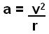

Actividad: Desarrollando programas en Python No. 3: Estatutos condicionales.
info_outline Actividad: Desarrollando programas en Python No. 3: Estatutos condicionales.
Desarrollarás la solución de algunos problemas.
group Modalidad
Individual
check Objetivos de aprendizaje
- Aplicar la estructura de control
switchy los operadores relacionales.
list Instrucciones
- Analiza cada uno de los ejercicios que se presentan a continuación. Diseña el algoritmo para la solución de cada uno de los ejercicios. Recuerda incluirlo con comentarios en el código.
- Escribe un programa en Python para cada uno de los ejercicios siguiendo tu algoritmo y haz las modificaciones necesarias para resolver el problema.
- Entrega, en la sección de "Envío de Tareas", los archivos .c que contengan el código fuente del programa.
- La actividad será evaluada usando la siguiente rubrica.
-
Problemas:
Utiliza el siguiente esquema como apoyo para desarrollar tus soluciones:

-
Ejercicio 1
Existen varias escalas para medir un terremoto, la escala de Richter representa la energía sísmica liberada en cada terremoto y se basa en el registro sismográfico.
Utiliza la sentencia de control switch para desarrollar un programa en Python que dada la magnitud en la escala de Richter de un terremoto, despliegue los efectos que este provoca, con base en la siguiente tabla:
Magnitud en la escala Richter Efectos del terremoto 3,4 "Generalmente no se siente, pero es registrado" 5 "A menudo se siente, pero sólo causa daños menores" 6 "Ocasiona daños ligeros a edificios" 7 "Puedo ocasionar daños severos en área muy pobladas" 8,9 "Terremoto mayor. Causa grandes daños" 10 "Gran terremoto. Destrucción total en comunidades cercanas" Incluye el algoritmo como comentario al inicio del programa.
casos de prueba:
a) F(1) = "Escala no existe"
b) F(5) = "A menudo se siente, pero sólo causa daños menores"
c) F(10) = "Gran terremoto. Destrucción total en comunidades cercanas" -
Ejercicio 2
Una partícula que se mueve en una circunferencia de radio "r" con rapidez constante "v" experimenta una aceleración centrípeta (o radial), "a", debido a que la dirección de "v" cambia con el tiempo. La magnitud de "a" está dada por:

Desarrolla un programa en Python que despliegue el siguiente menú y que, de acuerdo a la opción seleccionada por el usuario, pida los datos necesarios y calcule el resultado correspondiente:
Tema: Aceleración centrípeta
a. Aceleración centrípeta de una partícula
b. Velocidad de una partícula
c. Radio de la circunferencia en que se mueve una partícula
¿Que desea calcular?Recuerda hacer las validaciones pertinentes.
Incluye el algoritmo como comentario al inicio del programa.
casos de prueba:
opcion A) F(v,r)
a) F(1,2) = 0.5
b) F(5,3) = 8.3333
c) F(5,0) = Operación inválida.opcion B) F(a,r)
a) F(1,2) = 1.4121
b) F(5,3) = 3.8729
c) F(5,0) = 0opción C) F(v,a)
a) F(1,2) = 0.5
b) F(5,4) = 6.25
c) F(5,0) = Operación inválida. -
Programa Abierto:
Genera un clasificador de al menos 10 categoría diferentes, este debe tener al menos 2 niveles de decisión usando switch.
Este programa es tuyo, úsalo para hacer cosas interesante y retadoras no cosas fáciles.
attachmentRecursos
offline_pin Especificaciones de entrega
Los archivos (solamente el .c de cada programa) deberán ser entregados a través de la sección de "Envío de Tareas" de Blackboard los programas tienen que llevar por nombre tu matricula y el número de ejercicio e.g. "A008829001.c".